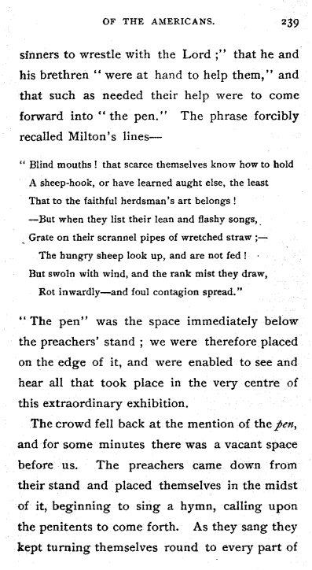

<pb n="239"/>
sinners to wrestle with the Lord;" that he and <lb/>
his brethren "were at hand to help them," and <lb/>
that such as needed their help were to come <lb/>
forward into "the pen." The phrase forcibly <lb/>
recalled Milton's lines— <lb/>
<q><lg type="group">
<l>"Blind mouths! that scarce themselves know how to hold</l>
<l>A sheep-hook, or have learned aught else, the least</l>
<l>That to the faithful herdsman's art belongs!</l>
<l>—But when they list their lean and flashy songs,</l>
<l>Grate on their scrannel pipes of wretched straw;—</l>
<l rend="indent">The hungry sheep look up, and are not fed!</l>
<l>But swoln with wind, and the rank mist they draw,</l>
<l rend="indent">Rot inwardly—and foul contagion spread."</l>
</lg></q>
"The pen" was the space immediately below <lb/>
the preachers' stand; we were therefore placed <lb/>
<!-- page continues... -->